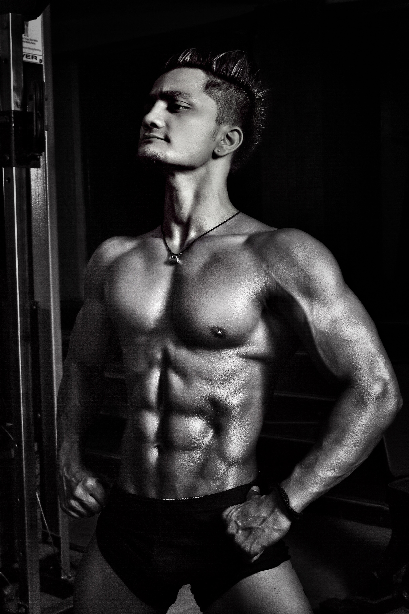

Welkom
Op dit platform is het mogelijk om je sportprestaties bij te houden. Onderzoek laat zien dat 60% van de sporters die hun prestaties bijhouden gemotiveerder zijn dan sporters die dat niet doen.

Op dit platform is het mogelijk om je sportprestaties bij te houden. Onderzoek laat zien dat 60% van de sporters die hun prestaties bijhouden gemotiveerder zijn dan sporters die dat niet doen.